MUTE는
이렇게 만들어졌어요
4인조 AI 아이돌 VANTA의 곡 〈MUTE〉 뮤직비디오.
콘티부터 컷 생성, 연결 검수, 편집까지 실제로 거친 순서와 실패에서 배운 것을 정리했어요.
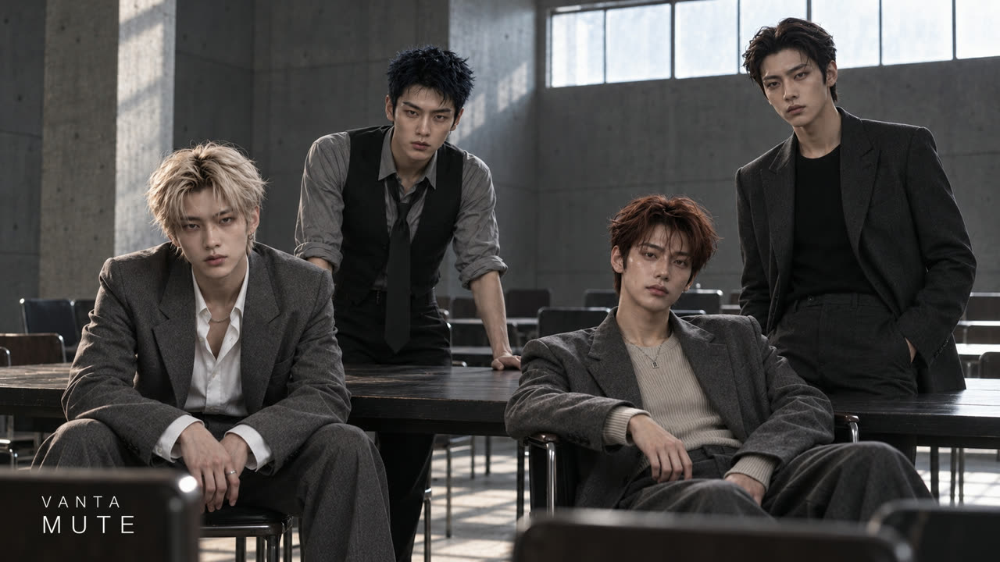
〈MUTE〉는 "다른 사람의 평가와 소음을 끄고, 내가 선택한 박자로 움직인다"는 곡이에요. 노래는 약 2분 4초이고, 화면은 24컷으로 만들었어요. 컷 하나는 5초나 6초로 생성했어요. 화려한 군무보다 작은 동작 하나와 시선으로 태도를 보여주는 쪽을 골랐어요.
| 순서 | 무엇을 하나요? |
|---|---|
| 노래 · Suno | 원곡을 만들고, 절·후렴·브릿지마다 감정과 리듬을 정리해요. |
| 얼굴과 공간 기준 | 멤버 원본 사진 4장과 세 공간의 콘셉트 이미지를 따로 준비해요. |
| 콘티 · 시작 프레임 | 24컷 콘티를 그리고, 컷마다 16:9 첫 장면을 이미지로 먼저 만들어요. |
| 영상 · Kling 4.0 | Higgsfield에서 시작 프레임을 넣고 image-to-video로 5~6초씩 생성해요. |
| 연결 검수 · 편집 | 실제 끝 자세를 보고 다음 컷을 이어 붙인 뒤, 원곡 위에 24컷을 올려요. |
뒷부분에는 실제 컷 5개의 화면과 영상 프롬프트 원문을 실었어요. 원본 인물 사진, 계정 내부 ID, 전체 프롬프트 묶음은 넣지 않았어요.
세 공간을
하나의 태도로 이어요
공간마다 맡은 감정이 하나씩 있어요.
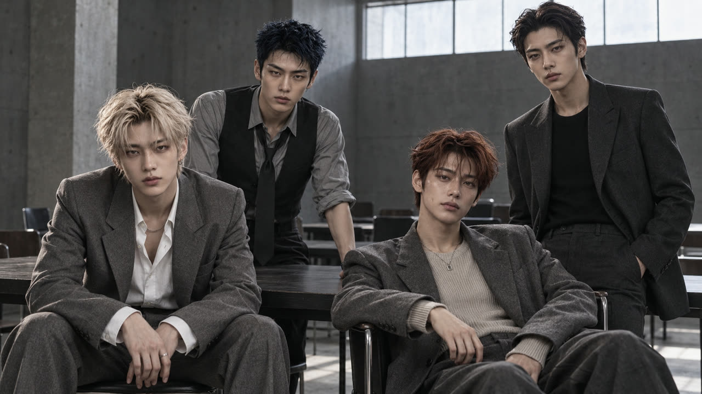
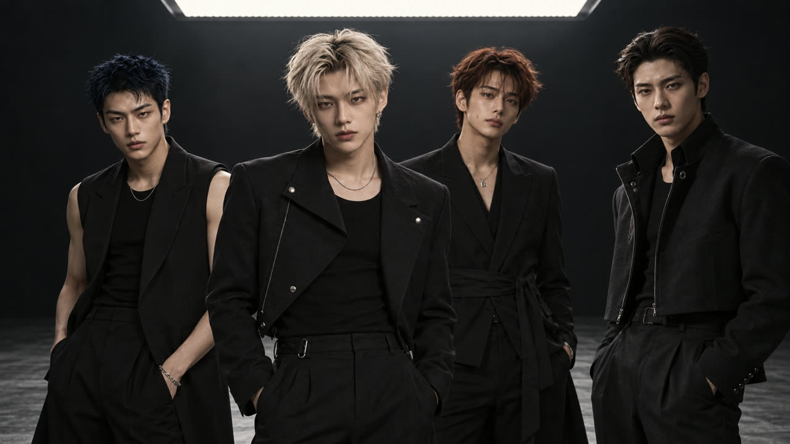
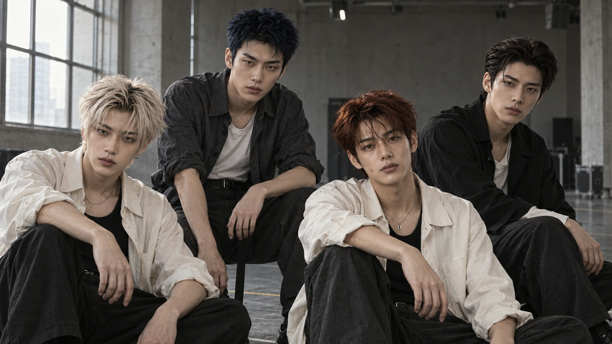
| 공간 | 의상 | 빛 |
|---|---|---|
| 평가실 | 차콜·그레이 수트, 화이트 셔츠, 베스트와 느슨한 타이, 오트밀 니트 | 창에서 들어오는 부드러운 낮광. 창 방향과 테이블 위치를 고정해요. |
| 블랙 무대 | 매트 블랙 수트, 슬리브리스 베스트, 비대칭 재킷, 와이드 팬츠 | 천장의 큰 직사각 조명 하나가 공간의 축이에요. 광택과 네온은 빼요. |
| 리허설 공간 | 오프화이트 셔츠, 차콜 팬츠, 블랙·그레이 오버셔츠 | 왼쪽 창의 자연광. 옆얼굴과 뒷모습으로 감정을 풀어요. |
정면 응시는 "쉿"과 마지막 선언에만 썼어요. 나머지 컷은 상대, 창, 손끝, 걸어가는 방향을 보게 해서 시선이 자연스럽게 흩어지도록 했어요.
얼굴은 늘
원본 사진이 기준이에요
앞 컷의 마지막 장면은 자세와 공간의 기준이지, 얼굴의 기준이 아니에요.
영상을 이어 만들다 보면 얼굴이 조금씩 달라져요. 그 달라진 얼굴을 다음 컷의 기준으로 쓰면 변화가 쌓여요. 그래서 모든 컷에서 멤버 원본 사진 4장을 얼굴 기준으로 다시 넣었어요. 멤버는 실명 대신 외형으로 불렀어요.
| 멤버 | 지켜야 할 특징 |
|---|---|
| 애시 블론드 | 짙은 뿌리의 흐트러진 중간 머리, 좁고 편안한 눈매, 피어싱과 얇은 체인 |
| 블루블랙 | 짧은 스파이크 머리, 굵은 눈썹, 각진 광대와 턱 |
| 오번 | 중간 길이 오번 머리, 코와 볼의 주근깨, 작은 사각 펜던트 |
| 다크 클래식 | 뒤로 넘긴 다크 브라운 머리와 내려온 한 가닥, 길고 조각적인 턱 |
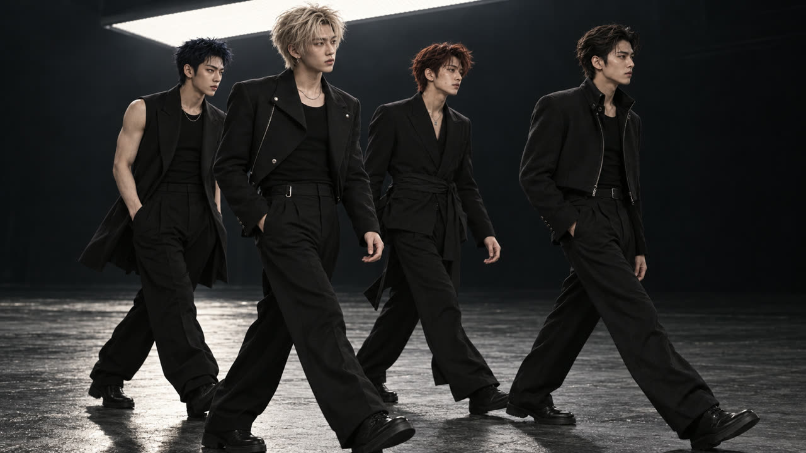
- 같은 사람인지 볼 때는 눈 모양과 간격, 코끝, 입술 두께, 광대와 턱 폭, 헤어라인, 주근깨와 표식, 액세서리를 차례로 비교해요.
- 얼굴을 크게 돌리거나 과한 립싱크를 시키면 얼굴이 쉽게 바뀌어요. 작은 호흡, 시선, 손동작으로 연출해요.
- 전신 컷은 머리 크기와 다리 길이를 기준 이미지 하나로 정해두고 계속 비교해요.
콘티 다음엔
시작 프레임부터
1컷 1이미지. 영상보다 이미지를 먼저 고정해요.
콘티는 연출 의도예요. 영상은 콘티를 그대로 넣지 않고, 컷마다 실제 첫 장면이 될 16:9 이미지를 따로 만들었어요. 이 이미지에서 인원, 의상, 구도, 머리 위 여백까지 먼저 확인해요.
- 이미지마다 역할을 정해서 넣어요. 공간 콘셉트는 의상·공간·빛, 원본 사진은 얼굴만 맡아요.
- 콘티 이미지와 시작 프레임에는 자막이나 로고를 넣지 않아요.
- 다음 동작에 필요한 공간을 미리 남겨요. 일어설 컷이면 서 있는 자세 기준으로 머리 위 10~15%를 비워둬요.
영상 프롬프트는
시간으로 나눠요
동작은 하나, 구간은 초 단위로 적어요.
| 칸 | 무엇을 적나요? |
|---|---|
| 시작 | "업로드한 이미지에서 정확히 시작" · 컷 길이와 화면비 |
| 유지 | 얼굴, 머리, 의상, 공간, 빛 방향을 그대로 유지 |
| 타임라인 | 0–0.4초, 0.4–1.6초처럼 구간마다 동작 하나씩 |
| 카메라 | 고정인지, 몇 cm 뒤로 빠지는지까지 구체적으로 |
| 금지 | 노래·말하기 금지, 얼굴 변형 금지, 새 인물 금지, 컷 없음 |
Start exactly from the uploaded first frame. One continuous [5/6]-second 16:9 live-action music-video take. Keep [인원] people, their faces, hair, outfits, room and light direction unchanged. 0.0–[t1]s: [시작 자세 유지, 호흡만]. [t1]–[t2]s: [동작 하나]. [t2]–[t3]s: [동작이 끝나고 정착]. Camera: [고정 / 뒤로 N cm / 오른쪽으로 트래킹]. Faces stay fully inside the frame. No speaking or singing, no face morphing, no new people, no cuts. Silent visual clip; original music will be added in editing.
끝 프레임이
다음 컷의 출발점
기획한 끝 자세가 아니라, 실제로 나온 끝 자세에서 이어가요.
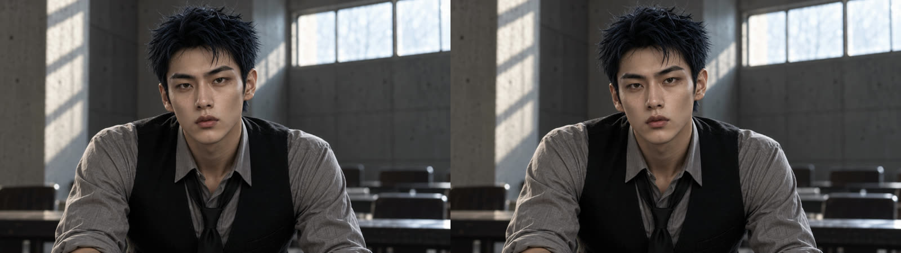
컷을 만들 때마다 시작·중간·끝 장면과 0.5초 간격 시트를 뽑아 봤어요. 끝 자세가 기획과 달라졌다면 다음 컷의 시작 프레임을 그 실제 자세로 고쳐요.
| 연결 | 어떻게 이었나요? |
|---|---|
| 03 → 04 | 블루블랙이 화면 왼쪽을 보고, 블론드가 화면 오른쪽을 봐요. 같은 방의 시선 축을 따라 컷인해요. |
| 06 → 07 | 앉아 있던 두 명만 일어나요. 이미 서 있던 멤버를 다시 앉히지 않아요. |
| 07 → 08 | 평가실에서 리허설 공간으로 장소가 바뀌어요. 의상이 변하는 효과 없이 호흡과 움직임을 맞춰 잘라요. |
| 17 → 18 | 17이 낮게 앉은 자세로 끝나서, 18은 그 낮은 자세에서 일어나는 동작으로 바꿨어요. |
| 22 → 23 | 오른손이 가슴에 닿은 채 끝났으니, 23은 그 위치에서 손을 내려요. |
자주 나는 오류와
고치는 법
한 컷이 끝날 때마다 0.5초 간격으로 장면을 뽑아 확인했어요.
| 오류 | 원인과 해결 |
|---|---|
| 얼굴이 화면 위로 잘려요 | 상반신 프레임에서 앞으로 걸으며 상체를 펴서 생겼어요. → 처음부터 넓게 잡고, 사람이 다가오는 만큼 카메라도 뒤로 빠지게 적어요. |
| 끝 자세가 기획과 달라요 | 작은 손동작을 시켰는데 바닥을 짚는 낮은 자세로 끝났어요. → 버리지 않고, 다음 컷을 그 자세에서 시작하게 고쳐요. |
| 뒤로 갈수록 얼굴 인상이 바뀌어요 | 상체와 턱이 크게 움직이는 컷에서 자주 생겨요. → 앞부분만 쓰고, 다음 컷에는 원본 사진을 다시 넣어요. |
| 손가락이 얼굴과 겹쳐요 | "쉿" 동작에서 손가락이 코를 잠깐 가렸어요. → 손과 얼굴을 떨어뜨리라고 적고, 손동작 구간을 1초 정도로 짧게 잡아요. |
| 조명 스탠드가 보여요 | 카메라가 크게 뒤로 빠지면 무대 밖이 드러나요. → 빠지는 거리를 줄이거나, 편집에서 그 구간을 짧게 써요. |
원곡 위에
24컷을 이어요
생성 영상의 소리는 모두 지우고 원곡 하나만 깔아요.
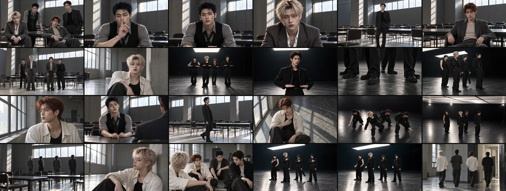
- Suno 원곡 전체를 편집의 오디오 기준으로 깔아요.
- 장소별로 소리 없이 이어 붙인 연결본을 먼저 만들어, 구도와 포즈가 이어지는지 봐요.
- 곡 전체에 24컷을 올려요. 대부분은 생성한 길이(5초, 6초) 그대로 쓰고, 세 컷만 줄였어요. 발 인서트 10프레임, 평가표 컷 2.8초, 정적 컷 2초.
- 최종본은 1920×1080, 24fps, 약 124초예요.
썸네일은
사진을 다시 만들지 않아요
마음에 드는 장면이 있다면, 글자만 얹어요.
썸네일을 다시 생성하면 얼굴과 의상이 미묘하게 달라져요. 그래서 고른 장면 사진은 그대로 두고, 투명 레이어에 글자만 써서 합성했어요. 사진의 색, 구도, 크기는 건드리지 않아요.
| 항목 | 설정 |
|---|---|
| 글꼴 | Helvetica Neue Light · 거의 흰색(#FAFAF8) |
| VANTA | 왼쪽 아래 · 크기 26 · 자간 12 |
| MUTE | 그 바로 아래 · 크기 40 · 자간 16 |
다음은 실제 컷 사례예요. 이미지는 생성된 영상의 한 장면이고, 프롬프트는 실제 입력한 영상 프롬프트 원문이에요.
소음을 멈추는 신호
블루블랙이 검지를 입술 앞에 대며 "쉿". 곡의 첫 소리 "Shh."에 맞춘 고정 클로즈업이에요.
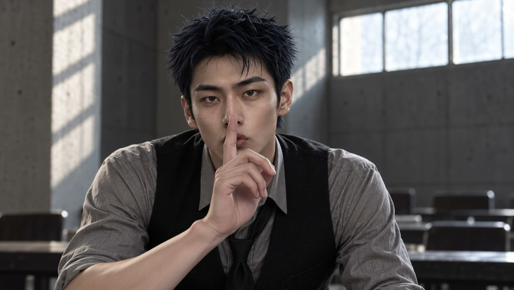
Animate only the exact man and room in the uploaded first frame for five seconds, one continuous locked-off 16:9 chest-up close-up. He is still standing behind the same table as the preceding wide shot, wearing the same gray rolled-sleeve shirt, black waistcoat and loose black tie. Keep his head orientation, face width, jaw, brow, eye shape and spacing, nose, lips, hairline, hair color, natural skin texture and age unchanged throughout. Do not beautify, re-sculpt, enlarge eyes or smooth skin. 0.0–0.4 seconds: preserve the starting pose and relaxed closed mouth, with only natural breathing. 0.4–1.6 seconds: his RIGHT hand rises slowly from below the frame; one straight index finger approaches the center of his closed lips. The other fingers remain naturally curled on this same hand, wrist relaxed. His other hand stays out of frame supported on the table. Keep the hand distinct from the face, do not bend or cover the nose. 1.6–2.6 seconds: the right index fingertip rests very lightly at the center of the closed lips, a small controlled 'shh' gesture. His eyes settle gently near the lens without widening. Keep his head still and expression calm. 2.6–4.4 seconds: he lowers this same right hand along the reverse path below the frame, returning to the original supported posture. 4.4–5.0 seconds: a brief still hold in the starting pose, hands low, to connect naturally into the next table shot. Only this one restrained gesture; tiny breathing and one natural blink. No speaking, singing, smiling, head turn, exaggerated lip motion or cheek deformation. Both lips and face remain stable when the finger passes. No camera movement, zoom, cut, new objects, extra fingers or limbs, flicker, text, subtitles or logos. Preserve the exact light direction, exposure, concrete corner, window grid and background chair positions. Silent visual clip; original music will be added in editing.
얼굴이 잘리지 않게
한 걸음
"결정은 내가 해"에서 다크 클래식이 의자에서 손을 떼고 한 걸음 나와요. 첫 테이크는 얼굴이 잘려서 다시 만들었어요.
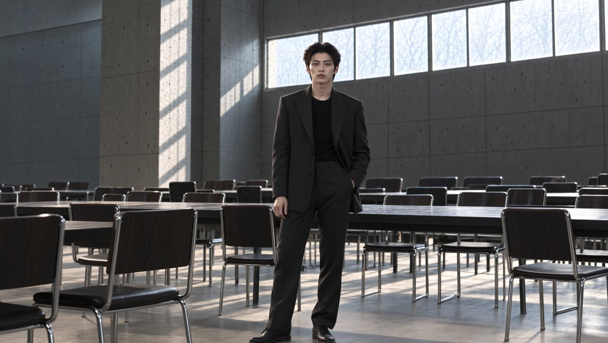
ONE unbroken five-second live-action music-video take. Start exactly from this WIDE input framing. This man is ALREADY fully standing upright; he does NOT rise or straighten upwards. Keep his exact face, swept-back hair, head proportions, same charcoal patterned suit, black crew knit, room, light and furniture. FRAMING IS THE HIGHEST CAMERA PRIORITY: his entire hair, forehead, eyes, nose, mouth and chin remain inside the picture during EVERY frame. Maintain at least the starting headroom, preferably 10 percent clear space above hair. Keep his face at the same vertical position and same size as the input, never push in or zoom. Beginning 0.6s still. He lets go of the chair with his right hand, keeps left hand in pocket, and takes ONE small grounded step toward camera. AT THE SAME TIME the camera tracks/dollies BACKWARD the SAME distance at matching speed, with a tiny upward tilt only if needed to preserve headroom. The person never grows larger in the frame, never approaches the top edge. Chair stays stationary behind him. Torso upright, shoulders relaxed, head level, no chin lift or head turn, quiet closed mouth and natural breathing. After the step both camera and man settle and hold the last second. Realistic feet and weight transfer, gentle smooth motion. No cut, no face morphing, no changed identity, no oversized head, no prolonged neck, no fabric change, no moving wall/window, no other people, no singing or talking. Silent visual for music editing.
볼륨을 내리는 손
가슴 높이의 두 손을 허리까지 천천히 내려요. 시작과 끝 이미지를 둘 다 넣은 컷이에요.
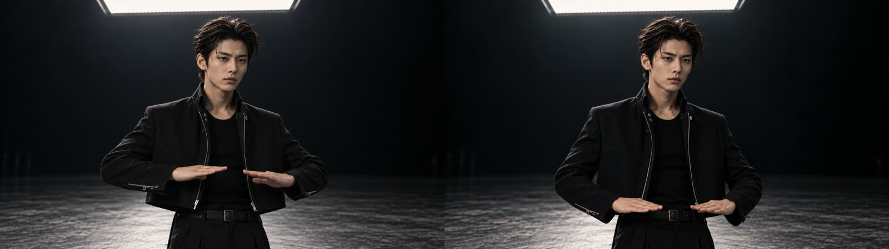
Single continuous realistic music-video take starting EXACTLY from the start image, with exact pose, framing, light and wardrobe continuity. Additional portrait images are IDENTITY REFERENCES ONLY, not costumes or backgrounds: preserve each original person's face, eye shape, nose, lips, jaw and skin marks, age and hair length/color; do not borrow their portrait clothes. No face blending, beautification, big eyes, reshaping, new people, singing or speaking. Same black matte outfits, stage, floor texture, overhead light and normal model proportions. Face and hair/forehead/eyes/mouth/chin must stay fully within frame; no push-in, zoom-in or sudden reframing. Natural anatomy, grounded feet and hands. Silent visual. FIVE seconds. One man only. The final keyframe is the same man with hands lowered: interpolate gently between the supplied start and END frame, preserving his head and facial features throughout. Head, face, eyes, lips, shoulders and camera remain almost STILL. Only lower both palm-down hands smoothly from mid-chest to waist in one calm action; fingers relaxed, normal five fingers. No hand flips or arm crossing. Do not tilt camera down; both face and hands are already safely in view. Hold the ending pose one second.
낮은 자세에서
일어나기
앞 컷이 예상과 달리 바닥을 짚은 자세로 끝났어요. 그 자세를 버리지 않고 이 컷의 출발점으로 썼어요.
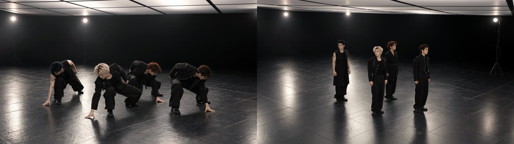
Single continuous realistic music-video take starting EXACTLY from the start image, with exact pose, framing, light and wardrobe continuity. Additional portrait images are IDENTITY REFERENCES ONLY, not costumes or backgrounds: preserve each original person's face, eye shape, nose, lips, jaw and skin marks, age and hair length/color; do not borrow their portrait clothes. No face blending, beautification, big eyes, reshaping, new people, singing or speaking. Same black matte outfits, stage, floor texture, overhead light and normal model proportions. Face and hair/forehead/eyes/mouth/chin must stay fully within frame; no push-in, zoom-in or sudden reframing. Natural anatomy, grounded feet and hands. Silent visual. SIX seconds. All four begin LOW in exactly the current crouched pose, one hand near floor. Do NOT teleport instantly to standing. They lift the supporting hand and rise smoothly through the legs over 2.5 seconds, then take ONE tiny grounded step and settle, keeping the same diagonal formation and left/right order. Camera simultaneously cranes UP and BACK, tracking their head height and leaving safe space above every head, then gradually looks down at a moderate 35-degree high angle. Not a vertical 90-degree top view, no spinning. Keep faces in the same downward/side directions, nobody looks up at lens. Soft hands at sides at end. No huge stride or further dance, hold final second.
MUTE.
마지막 선언. 가슴에 얹은 손을 세 번에 나눠 허리까지 내리고, 마지막 1.5초는 멈춰요.
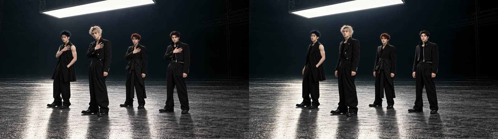
Single continuous realistic music-video take starting EXACTLY from the start image, with exact pose, framing, light and wardrobe continuity. Additional portrait images are IDENTITY REFERENCES ONLY, not costumes or backgrounds: preserve each original person's face, eye shape, nose, lips, jaw and skin marks, age and hair length/color; do not borrow their portrait clothes. No face blending, beautification, big eyes, reshaping, new people, singing or speaking. Same black matte outfits, stage, floor texture, overhead light and normal model proportions. Face and hair/forehead/eyes/mouth/chin must stay fully within frame; no push-in, zoom-in or sudden reframing. Natural anatomy, grounded feet and hands. Silent visual. SIX seconds. All four start exactly in the supplied end-of-previous-shot pose: right hands resting over upper chest, other arms relaxed. First second completely still. Then gently release the right hand from chest and lower it in THREE small controlled downward accents to waist level, palm gradually facing down with relaxed fingers. Preserve original head angles and facial expressions, almost no head movement; do NOT force extra face turns or exaggerated lens staring. Fixed camera at constant distance and height. Feet stay planted, no walking or body leaning. Final 1.5 seconds freeze the completed lower-hand pose with natural breathing only.
처음에는
한 공간, 한 컷부터
네 명의 무대보다, 한 명이 한 공간에서 손을 내리는 5초가 먼저예요.
공간 하나와 원본 얼굴 사진 한 장을 정하고, 시작 프레임 한 장, 5초 영상 하나를 끝까지 만들어보세요. 그 컷의 실제 끝 장면에서 다음 컷을 이어 만들면, 연결이 어떻게 무너지고 어떻게 살아나는지 바로 보여요.
| 만든 뒤 확인할 것 | 스스로 물어보기 |
|---|---|
| 인원 | 처음부터 끝까지 정확히 그 인원인가요? |
| 얼굴 | 원본 사진과 비교해도 같은 사람인가요? 뒤로 갈수록 달라지지 않나요? |
| 프레임 | 움직이는 동안 머리와 신발이 화면 안에 남아 있나요? |
| 연결 | 앞 컷의 실제 끝 자세에서 시작하나요? |
| 시선 | 정면 응시는 꼭 필요한 컷에만 있나요? |
필요할 때 찾아볼 공식 안내
공개판 v1 · 2026.10.24
도구의 메뉴와 지원 범위는 바뀔 수 있어요. 이용 중인 화면과 공식 안내를 함께 확인해주세요.